Visual perception and spatial memory in embodied AI are typically treated as independent modules, but
scaling visual encoders often fails to yield robust spatial representations. We investigate whether
sensor structure inherently shapes the format of spatial memory. We train a group of RL
navigation agents where architecture, task, and training are held strictly fixed, varying only the
spatial bandwidth of the visual encoder. We demonstrate that while all agents reach behavioral
convergence, their hidden-state position codes fundamentally diverge. Under a vision-limited
(bottleneck) encoder, position condenses into a scene-invariant, linearly-readable axis. Under a rich
encoder, position information scatters into non-linear, scene-conditional directions. We frame this
format shift as an emergent capacity allocation tradeoff between pre-formatted visual features
and recurrent temporal integration. Furthermore, causal interventions reveal a strict dissociation
between probe-readability and policy reliance, exposing a critical blind spot in correlational
interpretability methods. Our findings position sensor visual structure as a fundamental lever on
cognitive-map format, generating architecture-agnostic predictions for transformer-based navigators,
and suggesting that bandwidth-restricting perception (such as foveation) is actively
cognition-enabling rather than merely compute-saving.
How to read this page. The three cards below — Magnitude,
Format, Consumption — frame the central claim. Each results section
supports one of them; the RSA and Cognitive-Neuroscience sections corroborate
Format with independent, biology-derived tools.
H1 · Magnitude
Linear GPS readability declines monotonically from R² = +0.93 (blind) to −1.79
(uniform) while every agent still reliably reaches the goal. The encoder and LSTM memory compete
for a finite capacity budget: richer encoders pre-format position visually, freeing memory from
the integration route.
H2 · Format
The magnitude collapse is a format shift, not an information loss. MLP probes recover
position even where linear probes fail. Conditions develop nearly orthogonal position subspaces
(9/10 pairs >75°), and scene-invariance flips binary at the vision-on/off boundary.
H3 · Consumption
Probe-readability dissociates from policy reliance: Coarse has a readable code but barely uses
it; Uniform has no readable code yet suffers the largest persistent-memory penalty. A causal
β-subspace ablation shows the readable axis is one window into a distributed population
code, not its substrate.
All five conditions share an identical 3-layer LSTM-512 backbone, DD-PPO training on Gibson+MP3D
(472 scenes, 250M frames), PointGoal task, and sensor stack. Only the visual front-end varies.
Log-polar applies cortical-magnification resampling (mimicking primate V1) before the ResNet-18
backbone, letting us disentangle encoder spatial-output size from per-step feature variety.
Sensor Condition Visuals
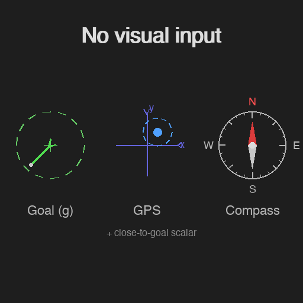
Blind — no cameraCoarse — 48×48 downsampledFoveated — eccentricity blur
Non-visual sensors (goal-in-start-frame, GPS, compass, close-to-goal, previous action)
each project to 32-d and are concatenated with the visual encoder output before the LSTM. The
top-layer hidden state h2 ∈ ℝ512 drives the linear
policy head and is the target of all probes.
Visual Transforms
Foveated — eccentricity-dependent
Gaussian blur
Differentiable blur with quadratic eccentricity falloff. Given gaze
position (gx, gy):
Multi-scale Gaussian blur interpolated across 5 pre-computed levels.
Parameters: fovea_radius=16 px, σ_max=8.0. Preserves the
full 256×256 pixel grid — only spatial frequency is degraded peripherally.
Log-polar — variable spatial sampling
Mimics primate V1 cortical magnification: the 128×128 avg-pooled frame is
resampled onto a 64×64 log-polar grid centred at gaze (fixed centre at 0.5, 0.5):
n_ρ = 64 rings, log-spaced from ρ_min = 4 px to
ρ_max ≈ 90 px.
n_θ = 64 angular bins uniformly spaced 0 → 2π.
Bilinear interpolation from the source frame at each (ρ, θ) sample point.
Encoder sees a 64×64 tensor where rows = eccentricity, columns = angle.
Unlike the foveated blur, log-polar removes peripheral spatial samples
entirely, creating a true encoder-input bottleneck. Yet it lands in the rich-encoder
regime (GPS R² ≈ −0.03), showing that per-step feature variety, not raw
encoder output size, drives the capacity-allocation tradeoff.
Probing & Analysis Setup
Freeze agent weights; collect h2 from 500 deterministic-rollout episodes
per condition.
Default decoder: Ridge regression (α = 10), GPS position as target.
Non-linear depth sweep: linear → MLP-1 → MLP-2 → MLP-4 to separate linear from non-linear coding.
Mutual-information estimates (MINE) verify total position content across conditions.
Causal interventions: β-subspace scrubbing; persistent vs. reset memory; cross-condition
transplants.
Example MP3D Evaluation Scenes (top-down views)
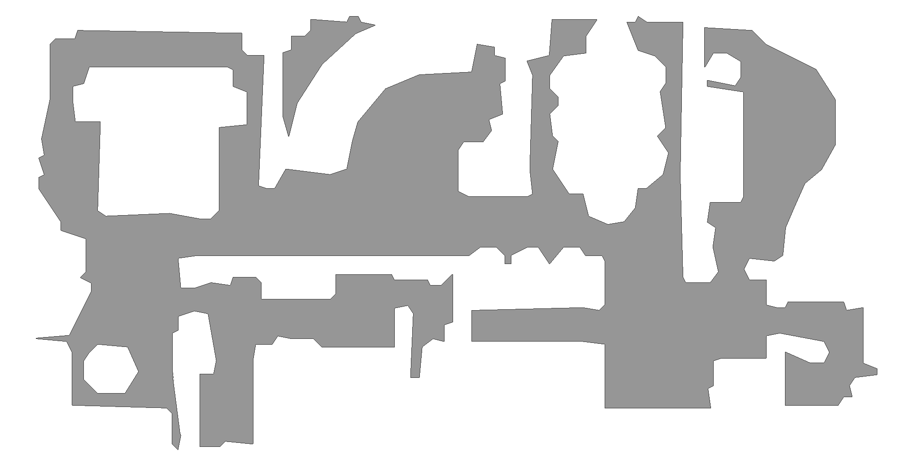
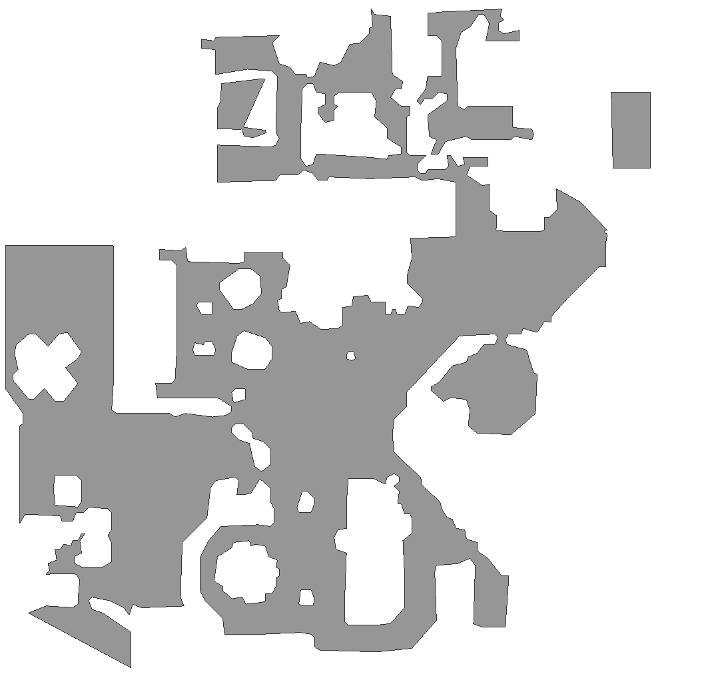
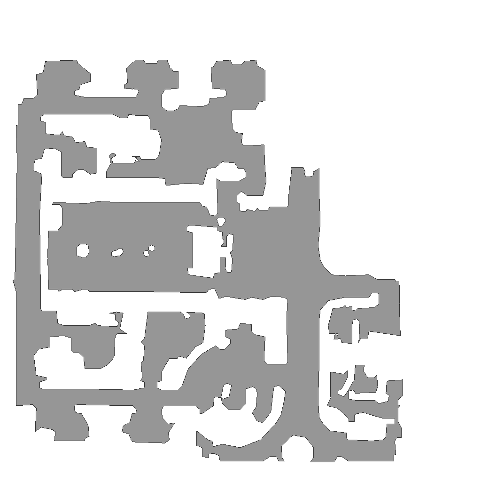
Navigation Performance & Spatial Probes
Memory diverges under convergent task performance. All five agents reach the goal
reliably (76–99% success, SPL 0.43–0.88), yet their hidden-state position codes span from
R² = +0.93 (blind) to R² = −1.79 (uniform) — a representational dissociation,
not a skill gap.
Condition
SPL
Success
Steps
GPS R² linear
GPS R² MLP-2
Blind
0.43 ± 0.02
76%
416 ± 34
+0.93 ± 0.04
+0.98 ± 0.00
Coarse
0.81 ± 0.02
97%
154 ± 19
+0.58 ± 0.10
+0.75 ± 0.09
Foveated
0.88 ± 0.02
97%
141 ± 21
+0.18 ± 0.66
+0.79 ± 0.05
Log-polar
0.86 ± 0.01
99%
124 ± 15
−0.03 ± 0.76
+0.63 ± 0.17
Uniform
0.87 ± 0.02
98%
127 ± 18
−1.79 ± 2.99
+0.35 ± 0.80
n = 200 deterministic-rollout episodes, mean ± SEM for navigation; 5-fold episode-level CV mean ± std
for probes. Linear R² < 0 means worse than predict-mean baseline — position is present but
encoded non-linearly (the MLP-2 probe recovers it).
H1 Magnitude: Linear Position Code Weakens with Encoder Bandwidth
Three convergent diagnostics. (a) GPS R² declines monotonically across the bandwidth
axis while every agent still navigates successfully. (b) During training, all sighted conditions start
high then diverge: bottleneck (coarse) plateaus, rich encoders decay as the visual route consolidates.
(c) Layer-wise probing shows the split emerges only at L₂ — the policy-readable layer — not at input
or intermediate layers.
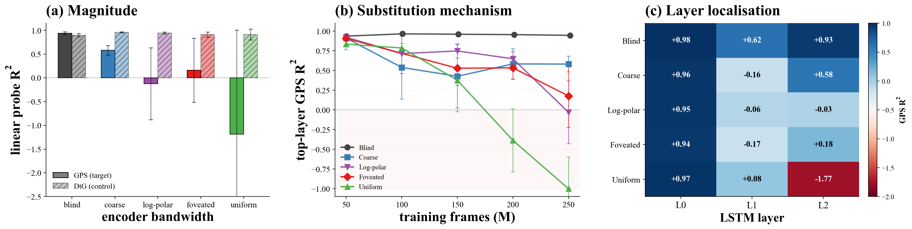
Figure 2 — Memory magnitude.(a) Per-condition GPS R² (filled) and
distance-to-goal R² (hatched, control). Dashed line: predict-mean baseline. (b) Top-layer
GPS R² across five training snapshots. The bandwidth-graded split appears after task convergence
(~100M frames for sighted), consistent with later refinement. (c) GPS R² along the LSTM
stack (L₀ input → L₂ top). The L₀ input carries GPS for every condition; the blind/rich split
emerges only at L₂.
Training Curves
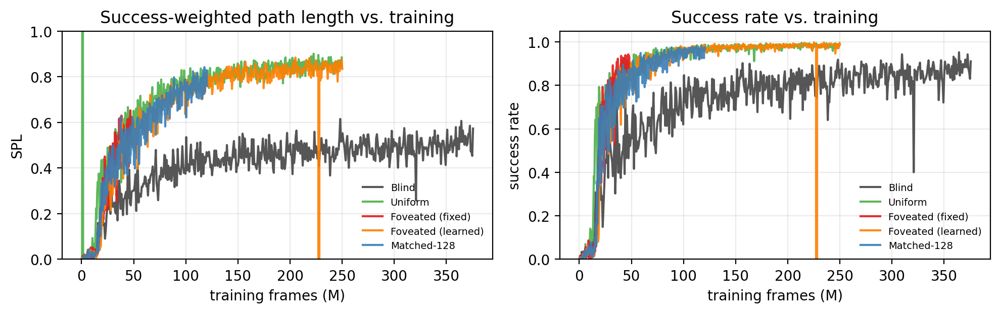
All five conditions converge to comparable task performance. The two endpoint regimes
(bottleneck: blind, coarse; rich encoder: foveated, log-polar, uniform) are both behaviorally
successful despite radically different memory formats.
H2 Format: Position is Encoded in Distinct Forms Across Conditions
A format shift, not an information loss. Non-linear probes recover position at
R² ≥ 0.35 even for Uniform, while the linear probe fails (R² = −1.79). Total mutual information
I(h2; pos) stays within a 1.3× range across conditions (blind 6.01 bits
vs. sighted mean 4.49 bits); the collapse is in format, not content. Principal angles between every
pair of condition position-subspaces place 9 of 10 pairs at ≥75°: these are categorically different
cognitive maps.
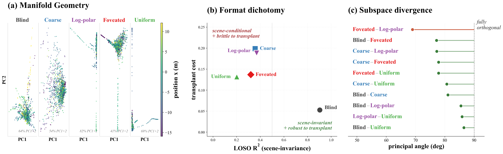
Figure 3 — Memory spatial format.(a) PCA-2D projection of
top-layer h2 per condition (1500 random steps), coloured by
ground-truth x-coordinate. Blind organises into a single position-graded manifold; rich-encoder
conditions fragment into scene-conditional clouds. (b) LOSO median R² for single-axis
transfer across rooms vs. cross-condition transplant cost. Blind uniquely occupies the
scene-invariant and transplant-robust quadrant. (c) Principal angle between every pair of
conditions' position-direction subspaces — 9/10 pairs at ≥75°.
CKA Representational Similarity
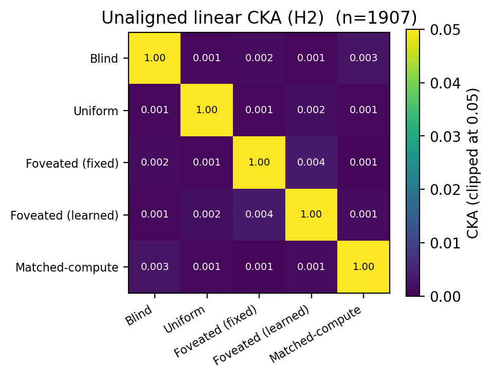
Centered Kernel Alignment (CKA) similarity between pairs of conditions' hidden-state
representations. Off-diagonal CKA <10⁻⁴: the five conditions develop nearly orthogonal
representational geometries despite sharing identical architectures, tasks, and training.
Memory Transplant Results
At episode midpoint (step 30), the LSTM hidden state of the donor is transplanted into the
recipient agent. Diagonal = self-transplant baseline. Highlighted cells show significant
SPL drops — the representational divergence is mechanistically real, not just a probe artefact.
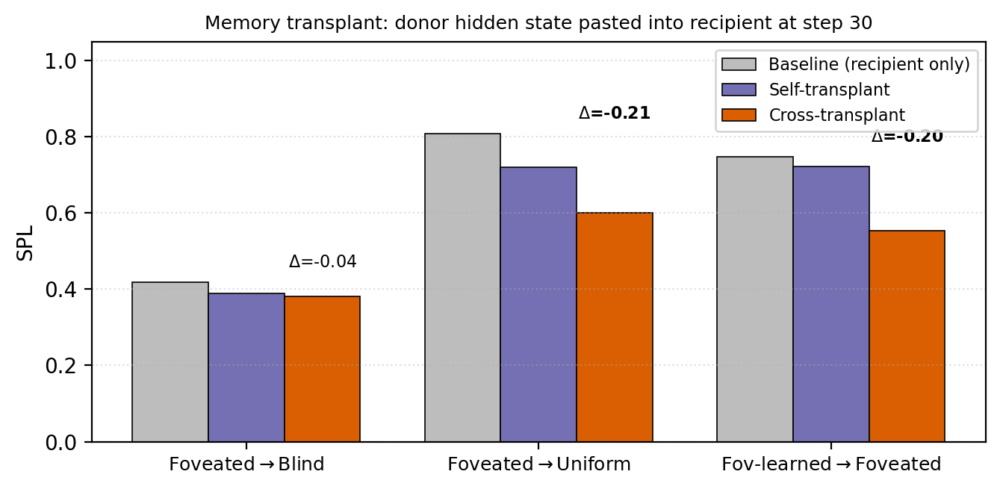
Cross-condition memory transplant costs. Every cross-condition transplant produces a
significant SPL drop (−16% to −25%), confirming that the position-code formats are mechanistically
incompatible — not just superficially different probe readouts.
Donor → Recipient
Baseline SPL
Transplant SPL
Change
Blind → Foveated
0.92
0.77
−16%
Foveated → Blind
0.68
0.56
−18%
Uniform → Foveated
0.92
0.69
−25%
Foveated → Uniform
0.96
0.78
−19%
Full 5×5 transplant matrix available in the paper (Appendix Fig. A7a). The pattern is robust across
transplant midpoints t ∈ {15, 30, 60, 90} steps and decays toward zero by t ≥ 400 as most
successful episodes have terminated.
H2 Representational Similarity Analysis
Where this fits: RSA is a rotation-invariant geometry check that complements the
subspace-direction evidence for Format (H2). It asks whether pairwise dissimilarity
structure — not the readout axis — varies with sensor condition.
RSA reveals two surprises. (RSA-Q1) The foveated condition is the only one whose
memory geometry shows no significant eccentricity effect (τ_a = +0.053,
p = 0.250) — the blur transform actively suppresses eccentricity-dependent structure,
while all other conditions including log-polar retain it. (RSA-Q2) Coarse and Uniform share the
most similar RDM structure (τ_a = 0.723), and Uniform is closer to Blind
(0.642) than to Foveated (0.264) — RSA geometry does not track the linear-readability axis.
Representational Dissimilarity Matrices
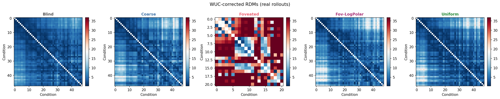
Representational dissimilarity matrices (RDMs) for all five conditions.
Each cell is the pairwise dissimilarity between hidden states
h2 at two timesteps, ordered by spatial position.
Structure in the RDM reveals how the geometry of memory is organised — whether
nearby positions are represented more similarly.
RSA-Q1 — Eccentricity Effect on Memory Geometry
Does the representational geometry of memory reflect spatial eccentricity
(distance from scene centre)? Kendall's τ_a compares RDMs at low vs. high eccentricity.
A significant positive τ_a means the memory structure is shaped by eccentricity.
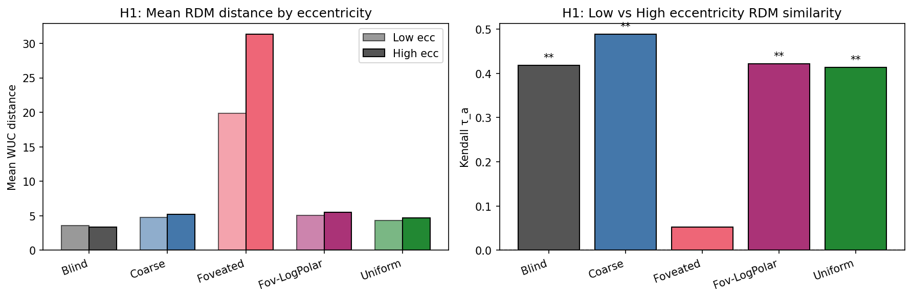
Eccentricity effect on representational geometry per condition.
Blind, Coarse, Log-polar, and Uniform all show significant eccentricity structure
in memory (p < 0.001). The Foveated condition alone is non-significant (p = 0.250),
suggesting that Gaussian blur actively removes eccentricity-dependent information
from the hidden state — a qualitatively different representational signature from
the log-polar condition, which also applies a gaze-centred transform yet retains
eccentricity structure.
Condition
τ_a (low vs. high eccentricity)
p-value
Δ mean dissimilarity
Blind
+0.418
< 0.001
−0.204
Coarse
+0.489
< 0.001
+0.458
Foveated
+0.053
0.250 (n.s.)
+11.50†
Log-polar
+0.422
< 0.001
+0.449
Uniform
+0.413
< 0.001
+0.369
† Foveated's Δ mean dissimilarity (+11.50) is roughly 25× the other conditions because
the blur transform inflates the absolute scale of pairwise hidden-state distances. Despite this
large absolute gap, the rank-order structure is unchanged (τ_a = +0.053, n.s.),
which is the eccentricity-effect signal — not the magnitude column.
RSA-Q2 — Cross-Agent RDM Similarity
How similar is the representational geometry between pairs of conditions?
Kendall's τ_a between RDMs measures whether the two conditions organise
their hidden states in a similar relational structure (rotation-invariant,
unlike CKA or principal angles).
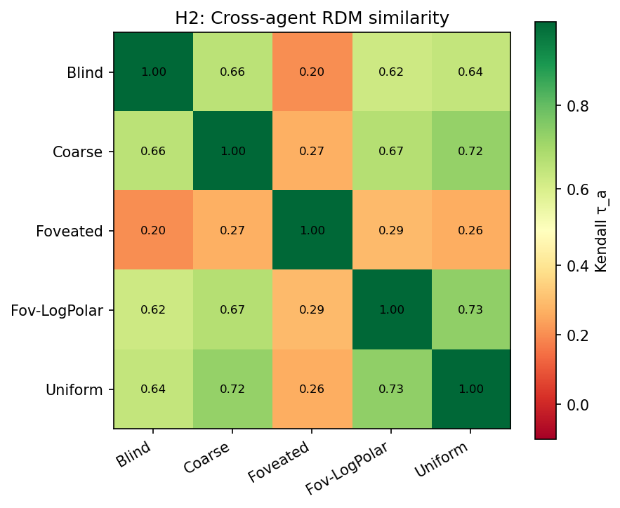
Cross-agent RDM similarity (Kendall's τ_a). Coarse–Uniform and
Uniform–Blind pairs share the highest structural similarity (τ_a ≥ 0.642),
while Foveated is the most structurally isolated condition. This complements
the principal-angle result from Figure 3c: the subspaces are orthogonal (different
directions), yet the pairwise-dissimilarity structure can
still be shared.
Pair
τ_a
p-value
Interpretation
Coarse vs. Uniform
0.723
< 0.001
Most similar RDM structure
Uniform vs. Blind
0.642
< 0.001
High — despite orthogonal subspaces
Foveated vs. Log-polar
0.290
< 0.001
Moderate — share gaze-centred transform
Foveated vs. Uniform
0.264
< 0.001
Low
Foveated vs. Blind
0.204
0.002
Lowest — Foveated most structurally isolated
H3 Consumption: Probe-Readability Dissociates from Policy Reliance
Two off-diagonal cases. Coarse carries a strong linear GPS code (R² = +0.58)
yet shows little reset penalty ("readable but unused"). Uniform carries no linear code yet suffers the
largest persistent-memory penalty ("used but not linearly readable"). Uniform's policy reads
a scene-history anchor — "head where I was going last time in this scene" — rather than world-frame
position.
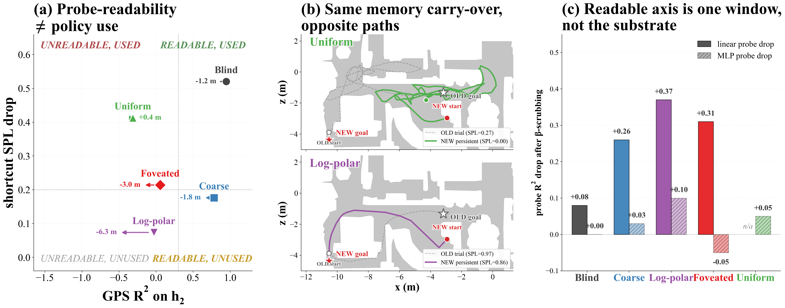
Figure 5 — Probe-readable position is not what drives behaviour.(a) Each condition's position in the readability–reliance plane; horizontal arrows show
the per-condition pull margin (rightward = "locks old goal"; leftward = "tries new goal"). Only
Uniform locks onto the old goal. (b) Two trajectories under identical setup: Uniform
fails to navigate to a new goal (persistent memory pulls it to the old goal area); Log-polar
succeeds. (c) β-subspace scrubbing: removing the readable linear axis collapses the
linear probe but barely moves the MLP probe, showing position is distributed redundantly across
many directions.
Shortcut Paradigm Results
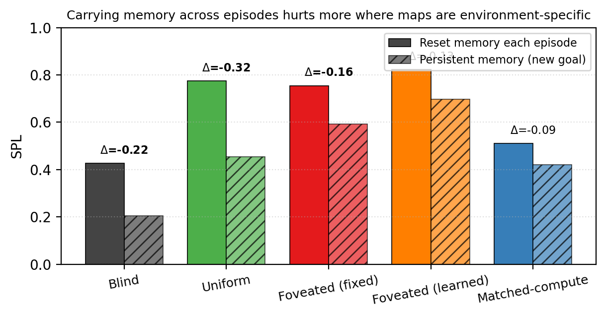
Per-condition persistent vs. reset SPL. The gap measures how much the policy relies on
memory carry-over from a previous episode in the same scene. Uniform's large negative gap
(persistent < reset) confirms it reads a scene-history anchor despite carrying no linear
GPS code.
Cognitive-Map Readout vs. Policy Reliance Dissociation
Condition
GPS code linearly readable?
Policy relies on memory?
Shortcut SPL penalty
Coarse
✓ (R² = +0.58)
✗ (small penalty)
small (readable but unused)
Uniform
✗ (R² = −1.79)
✓ (large penalty)
large (scene-history anchor)
The β-subspace scrubbing ablation (Fig. 5c) shows the readable linear axis is epiphenomenal: removing
it collapses the linear probe but barely affects MLP readout or navigation. Position is encoded
redundantly across many directions, paralleling biological place-cell population redundancy.
Cognitive Neuroscience Analyses
Where this fits: these four analyses corroborate Format (H2) with
independent, biology-derived tools — temporal dynamics, manifold topology, and an
architecture-agnostic re-test on Memory Maze + DINOv2. Together they show the format-shift
holds beyond linear probing.
We apply a battery of systems-neuroscience tools — intrinsic timescales, temporal generalization
matrices, persistent homology, and an architecture-agnostic world-model probe — to characterise
the memory format shift beyond linear probing. These tools are drawn directly from the biological
cognitive-map literature and applied here to a controlled comparative population where a single
variable (sensor bandwidth) is varied while everything else is held fixed, a comparison that is
hard to realise in biological systems.
Integration route runs slow; visual route ticks fast. Blind's memory units have
a median autocorrelation timescale of τ ≈ 19.3 steps — more than twice any sighted
condition (τ ≈ 7.7–9.2). The temporal generalization matrix (TGM) shows a
complementary split: blind yields a diagonal stripe (the goal-vector decoder works only near
the step it was trained at, reflecting continuous map construction); coarse yields the largest
stable block (the code is stationary across the episode). This mirrors the slow-prefrontal /
fast-sensory cortical-hierarchy gradient within a single recurrent module.
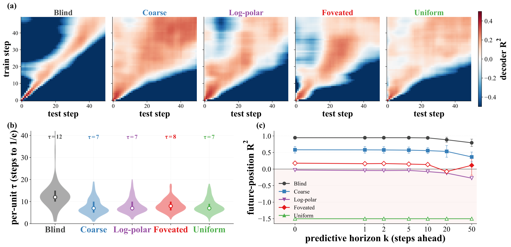
Figure 4 — Memory temporal format.(a) Is the readout axis stationary or does it rotate? Temporal generalization
matrix (TGM): a linear decoder of egocentric goal-vector trained at step ttrain
and tested at every other step ttest. A square block = stationary world-anchored
map (coarse); a diagonal stripe = step-by-step constructed map (blind).
(b) How long does a unit hold its past? Distribution of per-unit intrinsic
timescale τ — the lag at which within-episode autocorrelation falls to 1/e.
(c) Does memory carry a forward-rolling trajectory? R² of decoding position
k steps ahead from current memory — the successor-representation cognitive-map signature.
Intrinsic Timescale Data
Per-unit autocorrelation timescale τ measured across 30 sampled units. Blind's distribution
is wide and shifted toward slow integration (p10–p90 range: 9.2–31.3 steps); every sighted
condition collapses to a narrow fast-ticking cluster (IQR ≈ 7–11 steps). The two routes
segregate timescales even within a single recurrent module.
Condition
Median τ (steps)
IQR
p10 – p90
Blind
19.3
[13.2, 26.1]
9.2 – 31.3
Coarse
7.7
[7.0, 10.8]
6.5 – 14.1
Foveated
9.2
[7.0, 10.4]
6.1 – 15.1
Log-polar
9.0
[7.3, 10.3]
5.6 – 12.9
Uniform
8.5
[7.2, 11.1]
6.4 – 16.4
Topological Structure: Persistent Homology
H₁ loop counts decrease monotonically with encoder bandwidth.
Persistent H₁ topology counts the number of long-lived 1-cycles (loops) in the hidden-state
manifold — a parameter-free signature of representational geometry used to detect toroidal
grid-cell structure in mouse cortex. Here the counts order blind (219) > coarse (203)
> log-polar (183) > foveated (152) > uniform (133), mirroring the magnitude axis.
Cross-condition Wasserstein-2 distances between H₁ persistence diagrams are roughly
2× within-condition noise for every pair, confirming topological distinguishability.
Condition
H₁ persistent loops (mean ± std)
Max persistence
Within-cond. W₂
Blind
219.3 ± 4.1
0.338
8.86 ± 0.69
Coarse
203.3 ± 5.2
0.321
10.32 ± 1.34
Log-polar
183.3 ± 11.8
0.350
11.12 ± 0.86
Foveated
152.0 ± 4.2
0.313
8.59 ± 0.39
Uniform
133.3 ± 2.1
0.321
8.17 ± 0.18
Cross-condition Wasserstein-2 distances (selected pairs): foveated vs. uniform = 9.73;
coarse vs. foveated-logpolar = 12.96; foveated vs. foveated-logpolar = 14.21;
blind vs. foveated = 18.85; coarse vs. uniform = 21.38. Every cross-condition distance
exceeds the within-condition noise floor (~8–11), confirming topological distinguishability.
Persistent homology prediction was pre-registered in the opposite direction (we expected
uniform highest); we report what the data show.
The format-shift dichotomy reproduces in a completely different setting.
Frozen DINOv2-Base patch features at five bandwidths feed a small LSTM trained on Memory
Maze 9×9 offline trajectories with a next-feature prediction objective. Unlike Habitat,
there is no GPS/compass channel — the encoder is the only route to absolute position. This
reverses the linear R² direction (blind ≈ 0, uniform ≈ 0.45), but the non-linear gap
(MLP R² − linear R²) still decreases with bandwidth (coarse +0.62, uniform +0.55), replicating
the format-shift in a setup with a different encoder family, environment, and training regime.
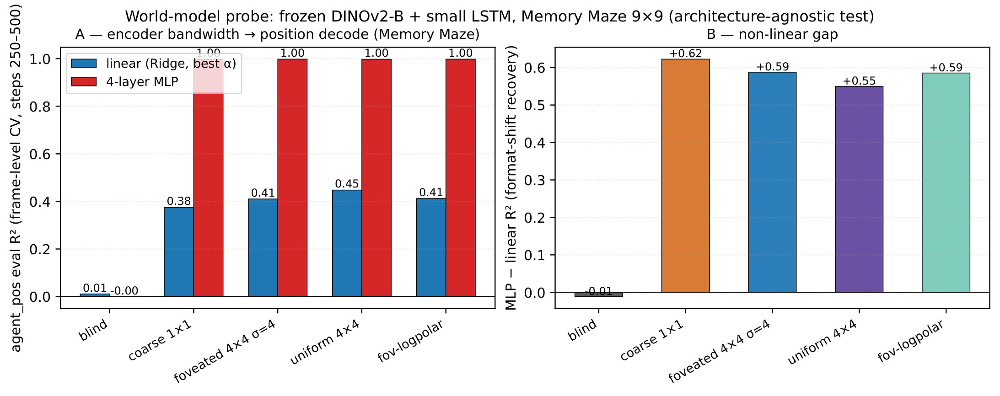
Figure 9 — Format shift reproduces on Memory Maze with DINOv2.(a) Linear (Ridge, blue) and 4-layer MLP (red) eval R² for agent position from
the LSTM hidden state, across five encoder bandwidths. Linear R² rises with bandwidth
(blind ≈ 0 → uniform ≈ 0.45) — the reversed direction reflects the absence of GPS.
MLP R² saturates at ≈0.998 for all sighted conditions and stays at chance for blind.
(b) Non-linear gap (MLP − linear) decreases with bandwidth, reproducing the
format-shift dichotomy.
Condition
Linear R² (Ridge α=10)
MLP R²
Non-linear gap
Blind
0.005
−0.000
≈ 0
Coarse
0.375
0.998
+0.623
Foveated
0.410
0.998
+0.588
Log-polar
0.412
0.998
+0.586
Uniform
0.447
0.998
+0.551
Memory Maze setup: LSTM trained on 9×9 offline trajectories, next-feature prediction objective.
n = 80k train / 20k eval frames, eval window steps 250–500 of T=500 trajectories. Ridge
values shown at α=10; results stable across α ∈ {0.1, 1, 10, 100}.
@inproceedings{xu2026sensor,
title = {Sensor Structure Shapes the Format of Cognitive Maps in Navigation Agents},
author = {Xu, Alun and Bruneau, L{\'e}o and Abkari, Rim and Aoutir, Zyad},
booktitle = {CS503 Visual Intelligence, EPFL},
year = {2026},
}